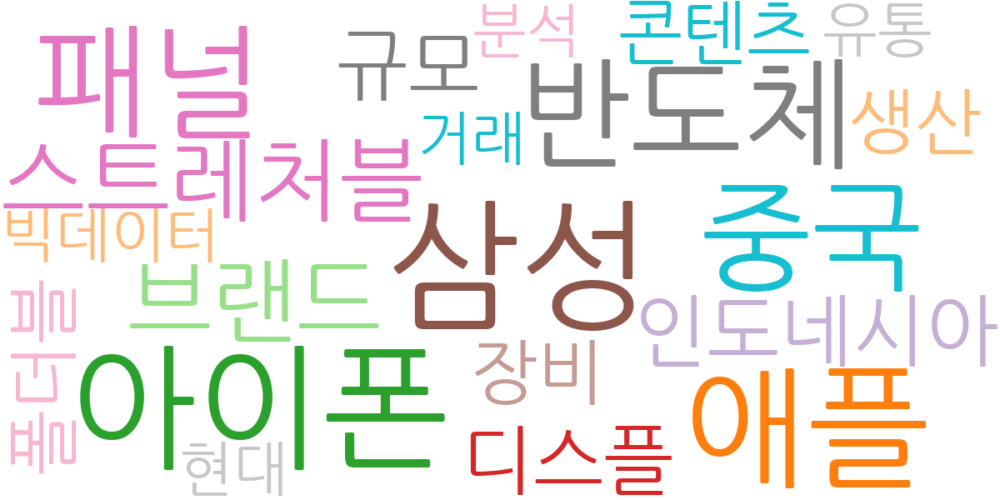
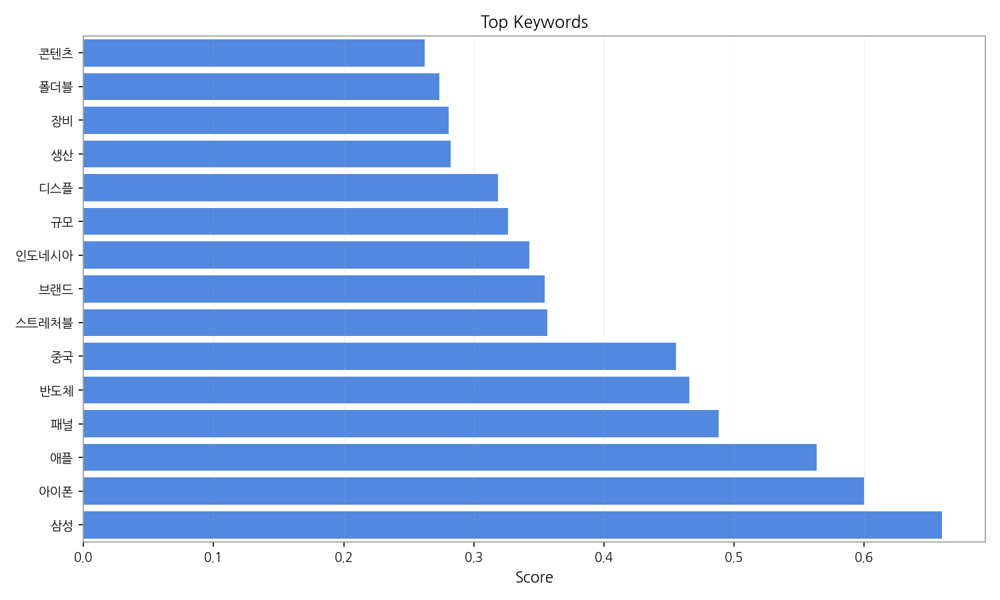
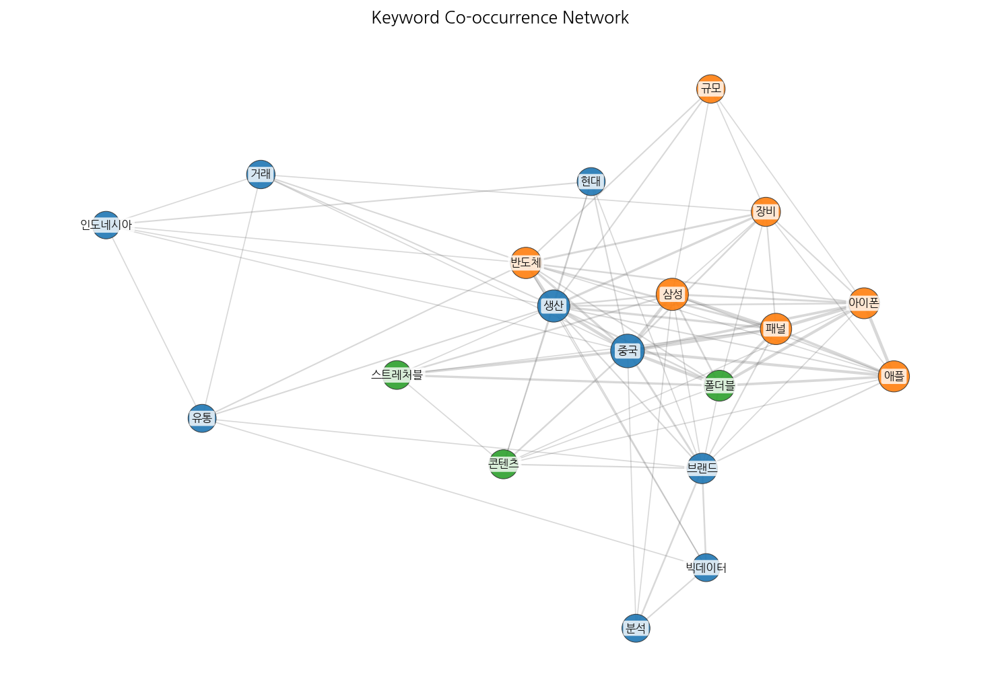
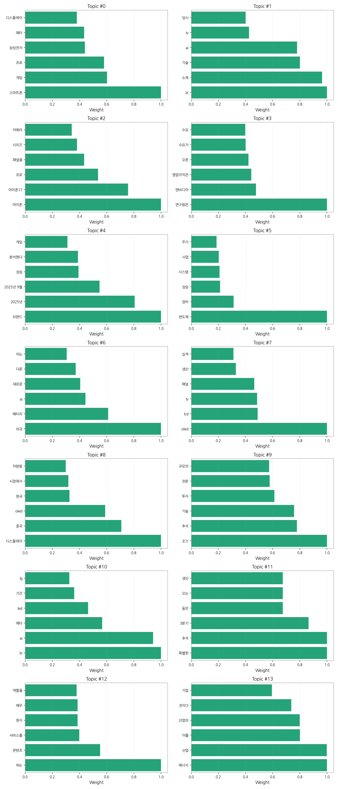
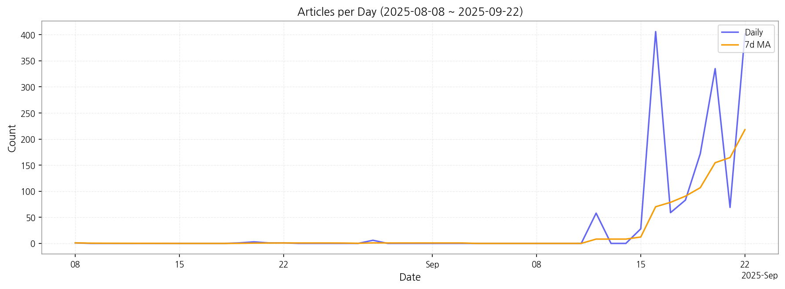

1. 핵심 맥락:
2. 최근 변화/스파이크:
3. 실무 인사이트:

| Rank | Keyword | Score |
|---|---|---|
| 1 | 삼성 | 0.660 |
| 2 | 아이폰 | 0.600 |
| 3 | 애플 | 0.563 |
| 4 | 패널 | 0.488 |
| 5 | 반도체 | 0.466 |
| 6 | 중국 | 0.455 |
| 7 | 스트레처블 | 0.356 |
| 8 | 브랜드 | 0.354 |
| 9 | 인도네시아 | 0.342 |
| 10 | 규모 | 0.326 |
| 11 | 디스플 | 0.318 |
| 12 | 생산 | 0.282 |
| 13 | 장비 | 0.280 |
| 14 | 폴더블 | 0.273 |
| 15 | 콘텐츠 | 0.262 |




1. 핵심 맥락:
2. 최근 변화/스파이크:
3. 실무 인사이트:
| Idea | Target | Value Prop | Score |
|---|---|---|---|
| 초고해상도 마이크로 LED 기반 AR 글래스 모듈 | 북미 빅테크 기업 (메타, 애플), AR/VR 기기 제조사 | 업계 최고 수준의 해상도와 밝기를 제공하는 마이크로 LED 디스플레이 모듈을 통해 몰입감 넘치는 AR/VR 경험을 제공하고, 소형화 및 저전력 설계를 통해 휴대성을 극대화합니다. | 4.50 |
| AI 기반 디스플레이 공정 자동화 및 수율 개선 솔루션 | 디스플레이 패널 제조사 | AI 기반 실시간 공정 데이터 분석 및 예측을 통해 불량 발생 가능성을 사전에 감지하고, 공정 조건을 최적화하여 수율을 극대화하고, 생산 비용을 절감합니다. | 4.30 |
| AI 기반 차량용 HUD 증강 현실 솔루션 | 글로벌 완성차 OEM, 자율주행 솔루션 기업 | AI 기반 실시간 도로 상황 분석 및 예측을 통해 운전자에게 최적화된 증강 현실 정보를 제공하여 안전 운전을 지원하고, 사용자 맞춤형 인터페이스를 통해 운전 경험을 향상시킵니다. | 4.20 |
| OLED 발광 효율 극대화를 위한 신소재 개발 | OLED 패널 제조사, OLED 재료 기업 | 기존 소재 대비 월등히 높은 발광 효율과 긴 수명을 제공하는 신소재를 개발하여 OLED 디스플레이의 성능을 향상시키고, 에너지 효율을 극대화합니다. | 4.00 |
| 차세대 IT 기기용 스트레처블 OLED 패널 | 글로벌 스마트폰 제조사 (삼성, 애플), 웨어러블 기기 제조사 | 자유로운 형태 변형이 가능한 스트레처블 OLED 패널을 통해 혁신적인 디자인을 구현하고, 뛰어난 내구성과 화질을 제공하여 사용자 경험을 극대화합니다. | 3.80 |